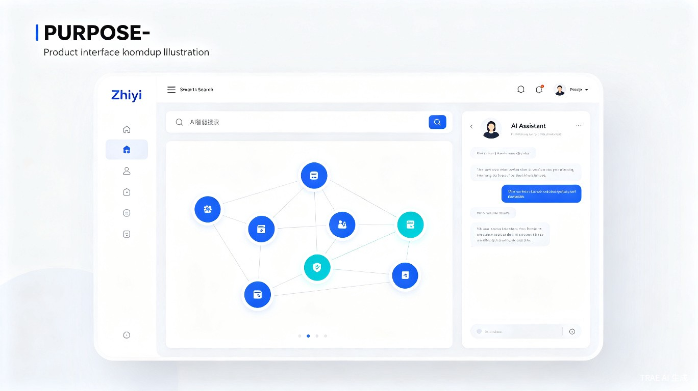

AI驱动的企业知识管理系统 — 让知识流动起来，让组织更聪明
知易智能知识管家（Zhiyi AI Knowledge Manager）—— 一款面向企业团队的 AI 驱动知识管理系统，通过智能检索、知识图谱与对话式 AI，帮助企业沉淀、组织与激活内部知识资产。
我们在实习和项目协作中深刻体会到：找一份历史文档往往比写一份新文档更耗时。ChatGPT 等通用 AI 无法访问企业内部资料，而传统知识库又缺乏智能。因此我们希望打造一款 "懂企业、懂业务、懂上下文" 的智能知识管家。
Web 端企业级 SaaS 系统，支持私有化部署，核心模块包括：AI 智能搜索、知识图谱可视化、AI 问答助手、文档智能归档与权限管理。

| 痛点 | 具体表现 | 知易解决方案 |
|---|---|---|
| 信息孤岛 | 知识分散在多个系统，互不连通 | 统一知识中台，多源聚合 |
| 检索困难 | 关键词搜索命中率低，找不到所需 | 语义搜索 + AI 问答 |
| 知识流失 | 老员工离职带走经验，新人难以接班 | 自动沉淀 + 知识图谱 |
| 协作低效 | 重复解答相同问题，沟通成本高 | AI 助手 7x24 在线答疑 |
| 版本混乱 | 文档多版本并存，不知哪个为准 | 智能版本管理与溯源 |
据 Gartner 研究，企业员工平均每周花费 9.3 小时 搜索信息。知易通过 AI 语义搜索与智能推荐，可将信息检索时间缩短 70% 以上。以 100 人团队计算，每年可节省约 3,800 人时，折合人力成本超过 50 万元。
此外，通过减少重复劳动、降低信息摩擦，知易间接减少了企业运营中的资源浪费，符合 绿色办公与可持续发展 理念。
flowchart TB
subgraph 接入层["接入层"]
A[Web 前端 React]
B[移动端 H5]
C[API 网关]
end
subgraph 智能层["AI 智能层"]
D[语义搜索引擎
向量数据库 Milvus]
E[大模型服务
LLM API + RAG]
F[知识图谱引擎
Neo4j]
end
subgraph 数据层["数据层"]
G[文档存储 OSS]
H[关系数据库 PostgreSQL]
I[缓存 Redis]
end
subgraph 数据源["数据源接入"]
J[企业网盘]
K[飞书/钉钉文档]
L[邮件/IM 记录]
M[本地文件上传]
end
A --> C
B --> C
C --> D
C --> E
C --> F
D --> H
E --> D
E --> F
F --> H
J --> C
K --> C
L --> C
M --> C
C --> G
C --> I
我们是一支由计算机专业学生与年轻工程师组成的团队，成员覆盖前端、后端、算法与产品设计。我们坚信 "知识应该被连接，而非被囤积"。知易不仅是一个比赛作品，更是我们希望持续打磨、真正服务企业的产品。
联系我们：如有合作意向或建议，欢迎通过比赛官方渠道与我们交流。